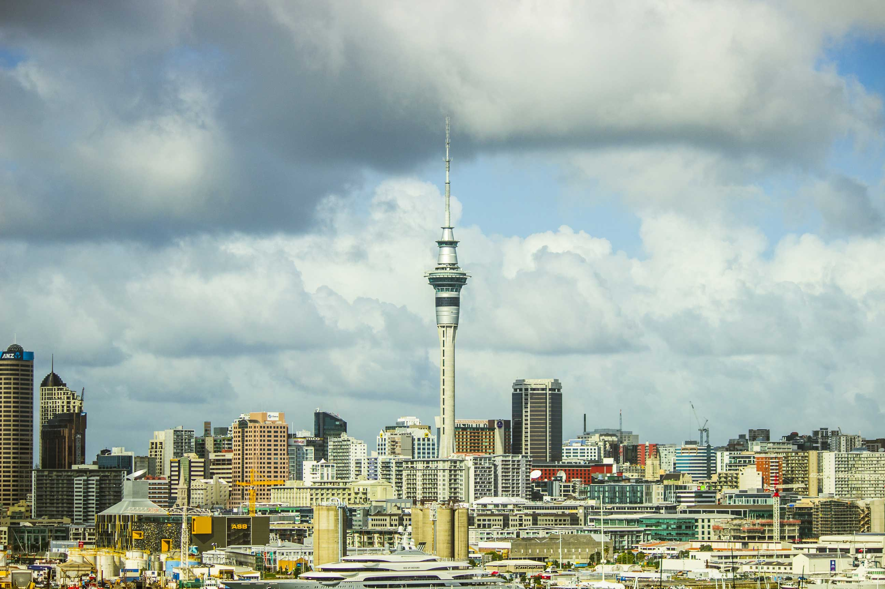

Sky Tower!
Auckland Tourist Location
Auckland's Iconic Sky Tower!
Standing at 328 metres tall, the Sky Tower is one of Auckland's most recognisable landmarks. Located in the centre of Auckland, it offers visitors panoramic views across the city and surrounding areas. On a clear day, visitors can see as far as 82 kilometres away. The Sky Tower has several attractions for visitors to enjoy. The viewing platforms provide 360-degree views of Auckland, while the SkyWalk allows visitors to walk around the outside of the tower at 192 metres above the ground. For those looking for an adrenaline rush, the SkyJump is a controlled jump from the tower. The tower also has restaurants where visitors can enjoy food while taking in the views. The Sky Tower is suitable for a range of visitors, whether they are interested in sightseeing, photography, dining, or adventure activities. Its central location also makes it easy to reach using Auckland's public transport and nearby attractions.
Facts:
- Located in central Auckland
- 328 metres tall
- Tallest freestanding structure in New Zealand
- Offers 360-degree views of Auckland
- Viewing platforms are available to visitors
- SkyWalk and SkyJump are available
- Restaurants are located within the tower